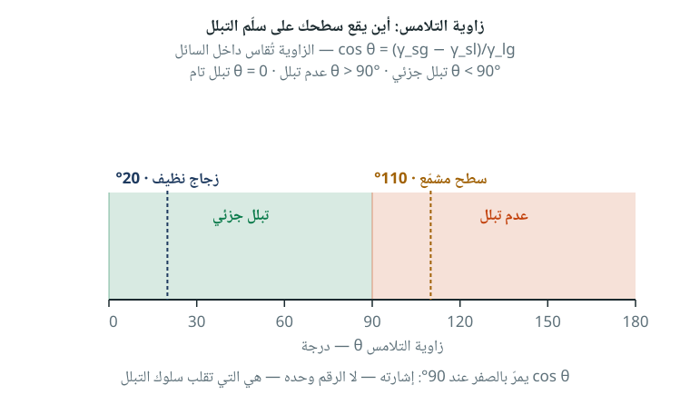

زاوية التلامس
Contact angle
زاوية التلامس θ هي الزاوية التي يصنعها سطح قطرة سائل مع سطح صلب عند خط التماس الثلاثي، وتُقاس داخل السائل. وهي مقياس للتبلل: θ أقل من 90° يعني سطحاً محبّاً للسائل، وأكثر من 90° يعني سطحاً كارهًا له. وتحدد مع التوتر السطحي ارتفاع السائل في الأنبوب الشعري.
عندما توضع قطرة على سطح صلب تتوازن ثلاث طاقات سطحية: بين السائل والغاز، وبين السائل والصلب، وبين الصلب والغاز. وزاوية التلامس هي النتيجة الهندسية لهذا التوازن، ويصفها قانون يونغ. ولهذا تعتمد الزاوية على كل من السائل والصلب معاً لا على السائل وحده. مثال: ماء على زجاج نظيف له زاوية تلامس نحو 20°، وعلى سطح مشمّع نحو 110°، ولهذا يتكوّر الماء على السطح المشمّع وينتشر على الزجاج.
كيف تعمل الظاهرة؟
عند خط التماس الثلاثي تتوازن ثلاث طاقات سطحية: طاقة السطح الصلب-غاز، وطاقة السطح الصلب-سائل، وطاقة السطح السائل-غاز. وإذا كانت طاقة الصلب-السائل أقل من طاقة الصلب-غاز فإن السائل يفضّل الانتشار لتغطية السطح، فتكون الزاوية صغيرة. وإذا كانت أعلى فإن السائل يتكوّر لتقليل مساحة التلامس، فتكون الزاوية كبيرة. ولهذا يبلّل الماء الأسطح القطبية وينفر من الأسطح غير القطبية كالتفلون.
العلاقة بالأرقام
cos θ = (γ_sg − γ_sl)/γ_lg. وارتفاع الشعري h = 2σcosθ/(ρgr). مثال: θ = 20° وσ = 0.0728 N/m وr = 0.25 mm: h = 2×0.0728×0.9397/(998×9.807×2.5×10⁻⁴) = 0.0559 m. ولو كانت θ = 60° لكان cos θ = 0.5 فكان h = 0.0298 m، أي نصف الارتفاع تقريباً.
مفاهيم متقاربة
يُفرَّق بين زاوية التلامس والتوتر السطحي: الأولى زاوية والثاني قوة لكل طول، وكلتاهما تدخل في قانون يونغ. ويُفرَّق بين الزاوية المتقدمة والمتراجعة: الأولى عند انتشار القطرة والثانية عند انكماشها، والفرق بينهما يسمّى التباطؤ. ويُفرَّق بين الزاوية الظاهرة والحقيقية، حيث تعدّل الخشونة الظاهرة. وأخيراً يُفرَّد بين التبلل التام عند θ = 0 والتبلل الجزئي عند θ أقل من 90°، فالأول ينتشر السائل كطبقة والثاني يبقى قطرة مسطحة.
حدود التطبيق
زاوية التلامس لا تصف الأسطح الخشنة بلا تصحيح، حيث تعدّل الخشونة الزاوية الظاهرة. ولا تصف الأسطح غير المتجانسة كيميائياً، حيث تظهر زوايا مختلفة في مواضع مختلفة. ولا تصف الأنظمة التي لا تصل إلى التوازن، كالقطرات المتبخرة. ولا تصف الأسطح الملوّثة بطبقة عضوية تغيّر الطاقة السطحية. وأخيراً لا تصف السوائل فائقة الانتشار التي تنشر طبقة رقيقة أمام القطرة.

| الكمية | القيمة | المصدر |
|---|---|---|
| زاوية تلامس الماء على زجاج نظيف | 20 ° | [1] |
| زاوية تلامس الماء على سطح مشمّع | 110 ° | [1] |
| التوتر السطحي للماء عند 20 °C | 0.0728 N/m | [1] |
المصادر
- 1 Surface Tension — The Engineering ToolBox (2026). www.engineeringtoolbox.com/surface-tension-d_962.html · اطُّلع عليه 2026-11-22
- 2 CODATA Value: Boltzmann constant — NIST — CODATA 2022 recommended values (2024). physics.nist.gov/cgi-bin/cuu/Value?k · اطُّلع عليه 2026-11-22
استشهد بهذا المصطلح
الصيغتان مبنيتان من بيانات الصفحة نفسها: العنوان والتاريخ ورابط النسخة المنشورة.
زاوية التلامس — Contact angle. (2026). ديوان المعرفة — انفراد. https://infiradev.com/diwan/terms/term-contact-angle.html
@misc{term-contact-angle2026,
title = {زاوية التلامس},
titleaddon = {Contact angle},
howpublished = {{ديوان المعرفة — انفراد} — مرجع علمي عربي},
year = {2026},
url = {https://infiradev.com/diwan/terms/term-contact-angle.html},
urldate = {2026-11-22},
note = {مراجعة علمية: تحرير انفراد الآلي — نُشر بأمر عبدالله الهويدي}
}
راجعه: تحرير انفراد الآلي — نُشر بأمر عبدالله الهويدي · 2026-11-22 · آخر تحديث 2026-11-22